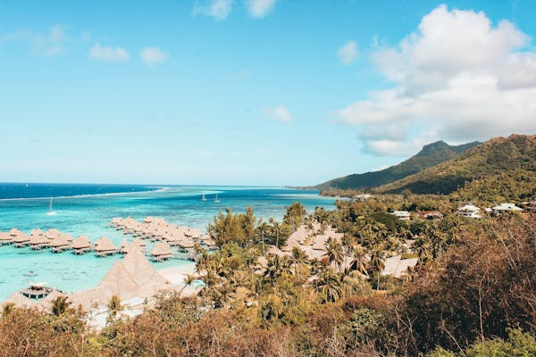
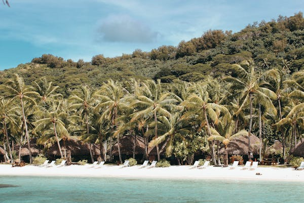
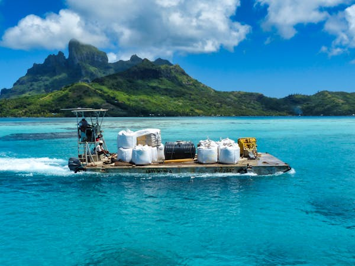
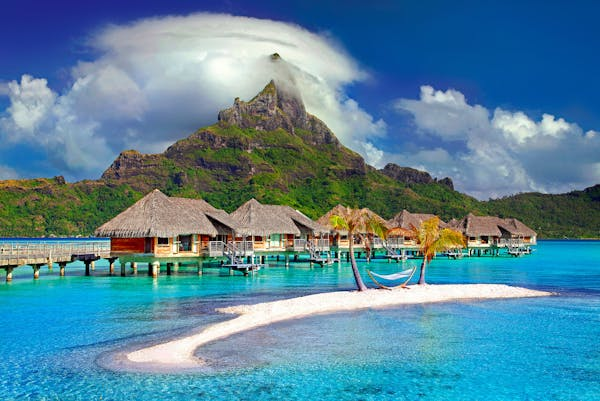
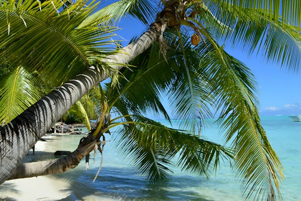

Conocida como la "Perla del Pacífico", Bora Bora es famosa por sus lagunas cristalinas, bungalows sobre el agua y montañas cubiertas de selva tropical.
Con sus casas blancas de techos azules y vistas impresionantes al mar Egeo, Santorini es un destino de ensueño en el Mediterráneo.
Un paraíso tropical en el Océano Índico, las Maldivas destacan por sus playas de arena blanca, aguas turquesas y una rica vida marina.
Esta isla hawaiana combina paisajes volcánicos, playas doradas y una cultura vibrante que encanta a los visitantes.
Un archipiélago en el océano Índico, Seychelles es conocido por sus formaciones rocosas únicas, aguas cristalinas y biodiversidad.
